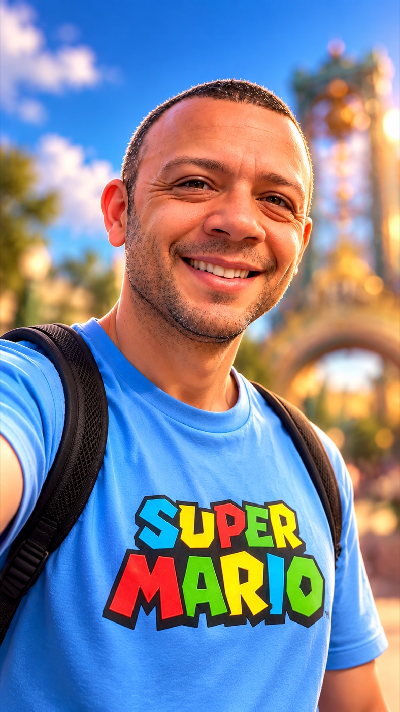

About me
Romulo Nascimento
Product Designer · UX/UI · Research · Prototyping

I design digital products that make complex tasks easier to understand and use. My work connects research, interface design and interactive prototyping.
Understanding the people behind a product comes first. User interviews and usability testing help me question assumptions, explore possibilities and refine the experience.
I bring a collaborative approach to UX leadership, connecting different perspectives and helping teams turn research into design decisions.
My portfolio brings together laboratory workflows, an interactive 3D refinery and learning games. These projects reflect my interest in making information tangible and helping people learn by exploring.
View LinkedIn profileSkills highlights
- Artificial intelligence
 User research
User research User interviews
User interviews- Usability testing
- Interaction design
- UX/UI design
- Rapid prototyping
- Interactive experiences
- Collaborative leadership
Industries
- Financial
 Automotive
Automotive- Technology
- Medical
 Health insurance
Health insurance- Tax
- Retail